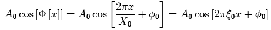
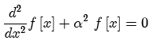

The sine and cosine functions. A sine can be created by adding -90° to the initial phase of a cosine.

Sinusoids are the solutions to the differential equation

Parameters:
Support: infinite
Area: zero for non-zero frequencies. If the frequency is zero, the sinusoid is equivalent to the constant function, and the area is infinite.
Symmetry: may be even (like cos[x]), odd (like sin[x]) or neither, depending on initial phase.
Read more about sinusoids at: